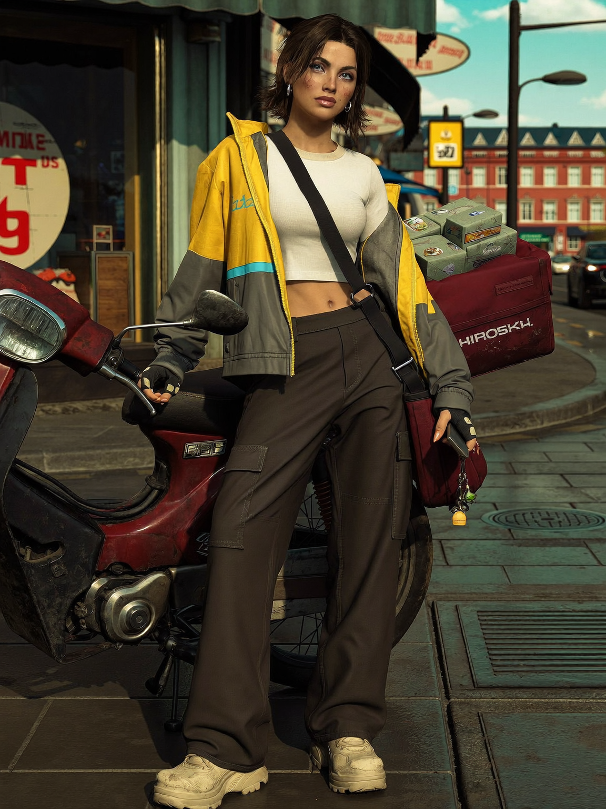
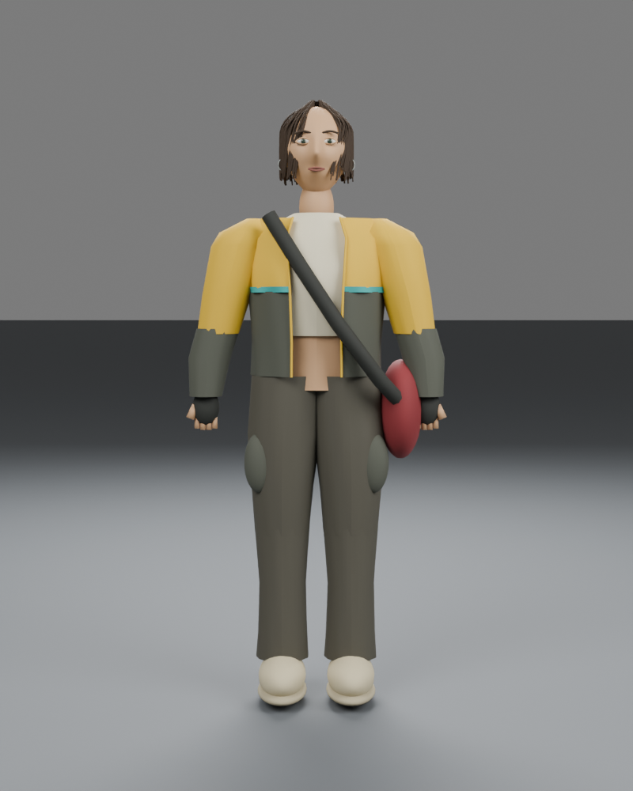
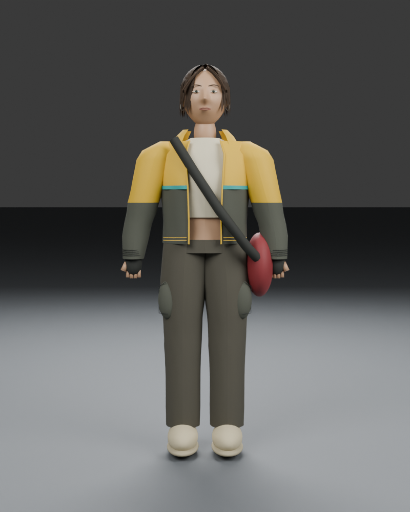
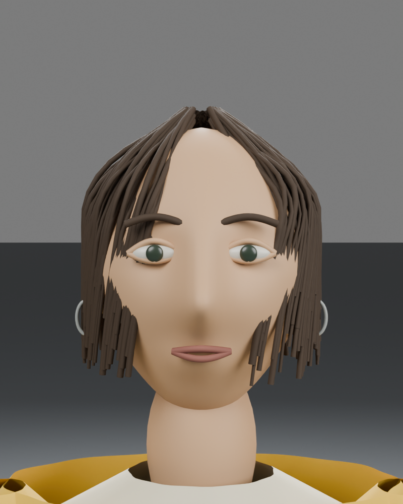
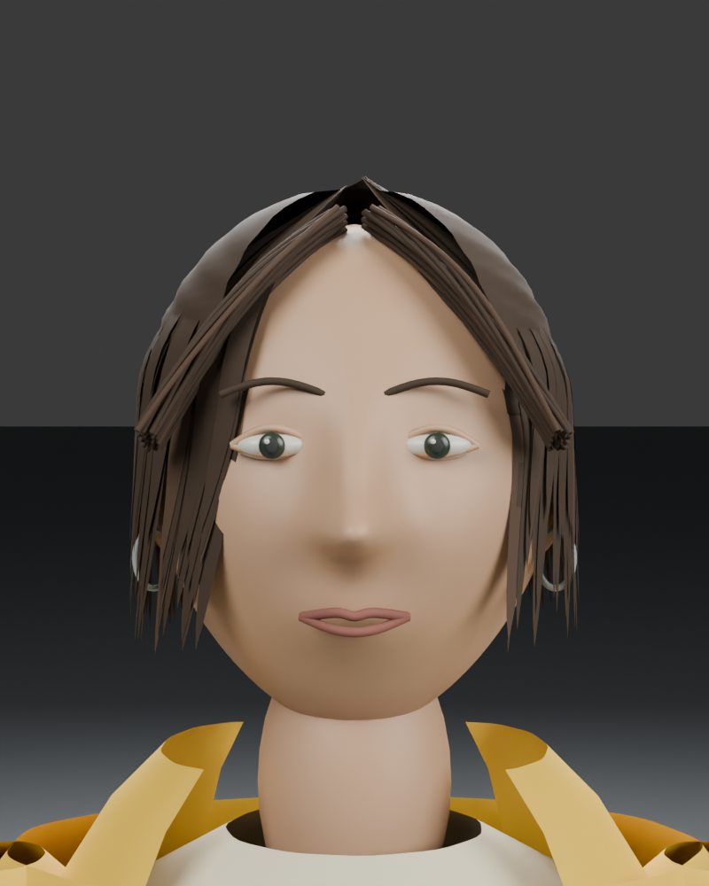
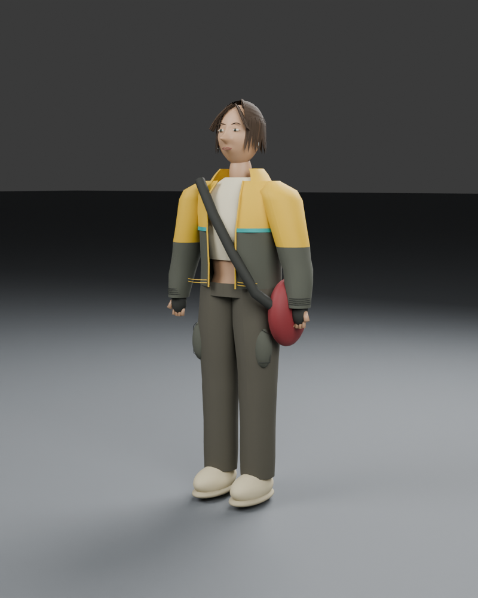
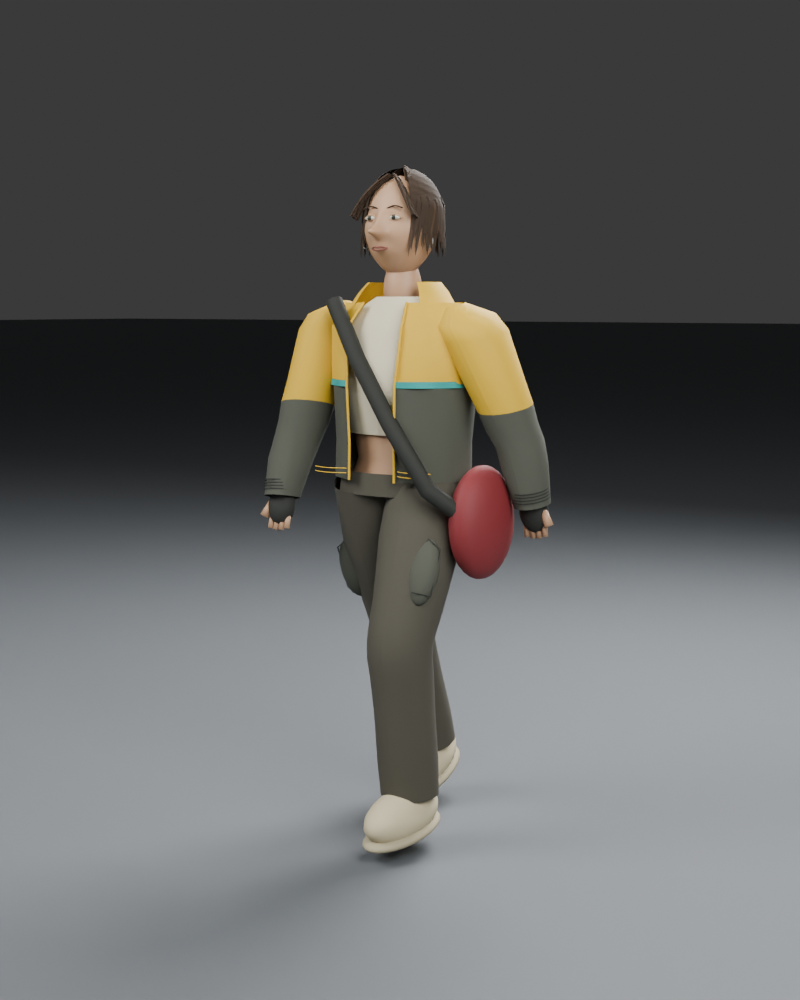
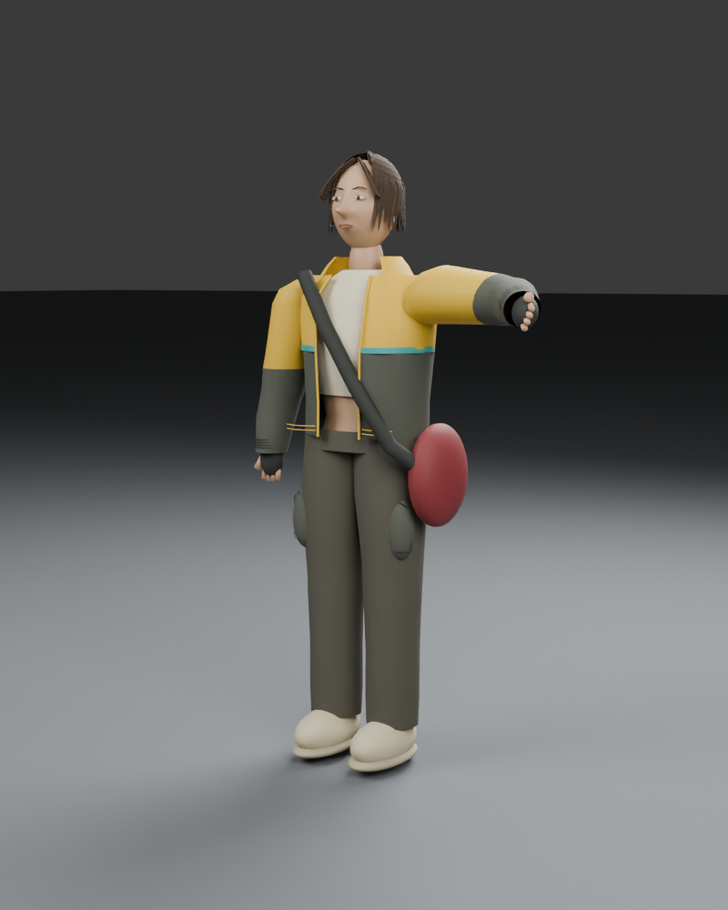

Actual Blender mesh renders. The approved image guides the study; likeness is not accepted. No new generation or purchased credits. Before and after use identical studio cameras and lights.








Remaining limitations: simplified face and hands, hair surface highlights and part shape, flat-color materials without skin or fabric textures, rigid shoulder attachment and prototype locomotion. The reference is not reproduced exactly.